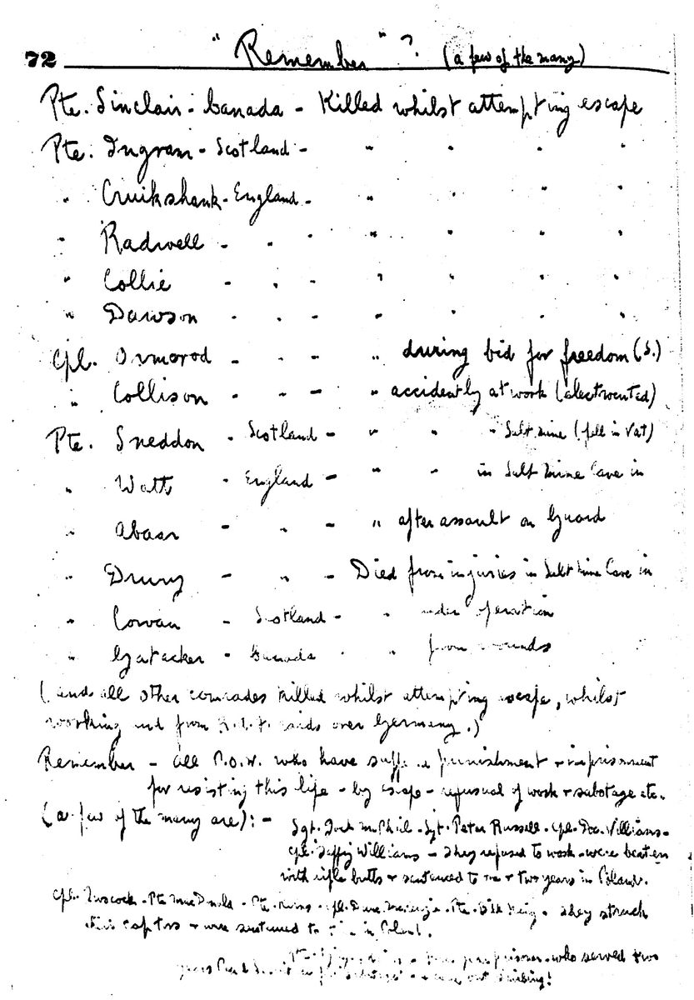
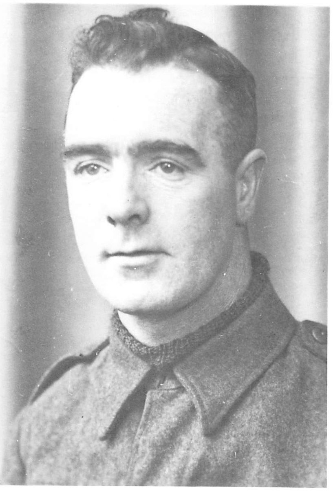
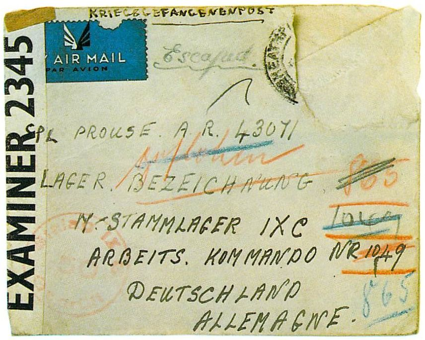
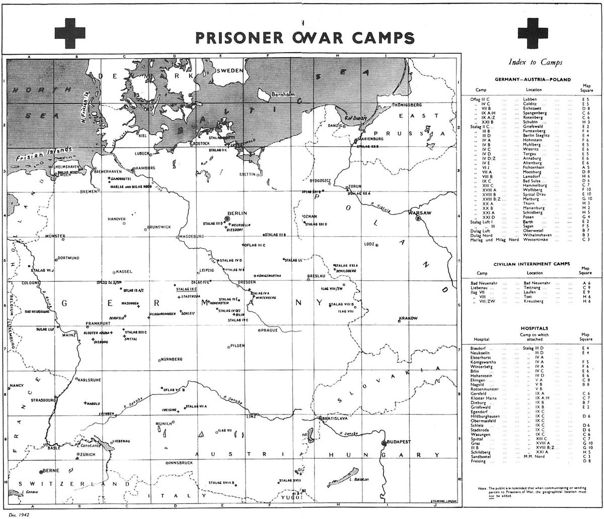

Chapter 4The Escape of Janek Mrachek

My cubicle partner was Tommy Glassey, a sergeant in the 51st Division, Imperial Forces. He was not tall in stature, but I was to learn that he was very ‘tall’ in coolness and courage. He was a good looking Scot with a quiet and friendly nature. When we weren’t discussing escape, he would wander from room to room strumming on his banjo. One of his friends, a private by the name of Pat, asked if he could join our escape attempt and was readily accepted. Pat, I believe, was from Glasgow, tall, rangy and very thin. Like Tommy and me, he had a restless spirit that dreamed of escape and adventure and he longed to get back into action.

Apart from periodic meetings and discussions on our plans, we didn’t fraternize too much and all talk was very secretive. Towards the middle of April, we started to plan our escape in detail. What made the plan feasible was that Tommy had learned to speak fluent German in the two years since his capture at Dunkirk. Our goal was to reach France, obtain sanctuary in a church and eventually contact the ‘underground’ for assistance. Tommy was to get the forged travel papers, Pat the money and myself the clothing.
The only typewriter in the camp was in Paddy’s office, our confidant man with the Jerrys. It was arranged that Paddy would be absent one night and Tommy broke into his office. He typed up our travel papers, seven for each of us. We planned to take seven short train hops rather than one long trip where our papers would be examined more closely. The names were inserted as Czech Arbeiter, or workers,, as some of them were allowed to travel to different cities as workers in war factories. My name was ‘Janek Mrachek’.
The next step was to have the papers officially stamped with the travel dates and the German swastika and eagle. This was accomplished by a Canadian who was an expert at carving wood. He carved the stamp out of a potato and, after it was dipped in ink, also stolen from Paddy’s office, and applied to the papers, they really did look official.
For the clothing, we traded with long-time prisoners who had managed to scrounge an extra pair of army pants. These were dyed a sickly reddish-brown by using red cabbage and the lead from indelible pencils. Anything we could scrounge that was brown or red was tossed into the large pot stolen from the kitchen. Each night Tommy would stir the stinking brew on our makeshift barracks’ stove. The smell was unbearable and was almost our undoing, as the Germans soon were questioning us on its origin. Fortunately they accepted our excuse that the daily ration of cabbage was rotten and had stunk up the whole camp.
Next we needed civilian jackets and hats and, as this was my job, I traded my outside job in the daytime to another prisoner for his factory night shift. I volunteered to carry the two large metal jugs full of ersatz coffee that the men on the night shift were allowed for their break at midnight. During the break we were permitted to use one end of the civilians’ canteen. We’d heat up the coffee and eat our snack of one piece of black unbuttered bread which, with a little salt, wasn’t too difficult to get down. With the help of the other prisoners who kept watch, ready to warn me, I would crawl underneath the trestle tables to the dark end of the canteen where the civilians hung their hats and coats.
The first night I was able to steal two jackets, which I stuffed into the now empty coffee jugs. When the shift was over at 5:00 a.m., I had no trouble walking past the guards and smuggling the jackets into the camp where they were quickly hidden in the niches I had prepared while doing my stint as carpenter. That same day, we were rousted out of bed by a Gestapo search-party, most likely alerted by the civilians whose jackets were missing. They went away empty-handed, but we were tired as hell that night when reporting for night shift, after having our day’s sleep disturbed.
Because of the Gestapo visit and search, I thought it best to lay low. Consequently, during the next few nights, I didn’t risk taking any more clothing, particularly since the civilians in the canteen were eyeing us suspiciously. I still carried the jugs and awaited my chance. During this period, I met a civilian in the latrine. He was a retard who swept the floors. I gave him a small piece of chocolate saved from my Red Cross parcel. I then offered him a French cigarette and promised to give him a full pack of Canadian cigarettes when I received my next parcel from home. In exchange, I first asked for bread and later for German money. I began to like this character, even though he was quite simple. As near as I could learn with my limited German, his name was Henry and he had been a cavalry man in the First World War. He claimed that he had been shot from his horse and had landed head first on a rock. This I believed, if nothing else!
Over a period of ‘dealing’ with Henry, I managed to get the required money and, having mentioned a hat to him in one of our discussions, he also proudly handed me a peaked cap of the type worn by many Germans. Later that night I tried it on. By splitting the back with a razor blade, I was able to make it fit me. I was extremely pleased with the German badge pinned on the front but Tommy soon wised me up by telling me that it was a Hitler Youth badge. It was fortunate that he had recognized it, for if I had left it on during escape I would have been quickly singled out and caught.
It was now time for a try at getting another jacket to fit me. The first two fitted Tommy and Pat, not perfectly but they were passable. The third jacket and two more hats would complete our wardrobe. I carried the usual two jugs of coffee when going on night shift and, on the midnight break, while the other prisoners kept their eye on the civilians and guards, I again crawled under the tables and worked my way to the coat rack. My goal was not only to acquire a jacket, but one that would fit me. Most of these jokers were small, with only the foreman coming close to my build. Time was limited and I felt a cold sweat coming over me as I struggled into one jacket after another. Finally I found one that seemed to be tailor-made for me. It was a heavy tweed and I had one hell of a job trying to stuff it into one of the jugs. I got most of it in by forcing it with my foot, and the rest went in easily with an extra kick that caused a sound like a breaking stick. Then I grabbed two hats at random and shoved them into the other jug. I was just in the nick of time, as the break was over and I could hear the shuffle of feet starting to move out. Scrambling under the tables, I watched the feet of the prisoners leaving first and came up amongst them with an enormous feeling of relief.
Once again, we got back to camp without any problems and, as soon as the guards left, I examined my loot. All the garments fitted us perfectly. The only problem was that the identification in the wallet found in the side pocket of the jacket belonged to the foreman, a Jerry by the name of Ratzman. He was a miserable son-of-a-bitch who wore thick-lensed glasses and always seemed to be peering at you. He had absolutely no sense of humour and was constantly losing his temper when we wouldn’t work. He usually resorted to calling a guard over, who would give us a few prods with a rifle butt. We fondly named him ‘Rat Face’, and he and ‘Crazy-legs’, the Commandant, ran neck and neck in our esteem.
After discovering the owner and learning that the snap I had heard while stealing the coat was caused by the foreman’s pipe breaking, I made sure that the coat and hats were well hidden and hoped for the best. We had just crawled into our bunks when the Gestapo charged in and hauled us out of our flea pits for the usual search procedure. The first step was to rip our palliasses apart and throw the straw all over the place. Then they tore a few boards off the floor and ceiling and generally made a bloody mess of the barracks and a nuisance of themselves. The only ones who were really disturbed were the fleas, and I happily noticed some of the guards beginning to scratch. The Gestapo finally left empty handed, overlooking the most obvious hiding place, the unlit wood stoves. Later, feeling quite satisfied, we retired for a well earned sleep.
During the next few days, after trying on our borrowed and dyed clothing, we commenced smuggling our loot out piece by piece, once again using the coffee jugs. After being herded into the factory by the guards, we would take turns when going to the latrine to slip out through a window and bury a piece of the clothing in a nearby ditch. The last items to go out were our passes, money and escape rations. The latter consisted of food we had saved from our Red Cross parcels such as raisins, small pieces of broken chocolate and hard biscuits.
Our next move was to exchange places with three other prisoners who had agreed to take our night shift in return for their day shift. Everything now had been done, except to choose the day of escape. By mutual agreement, we chose April 27.

On the morning of our attempt, we lined up at 5:30 a.m. with the rest of the day shift and moved out of the laager into the semi-dark yard. On the way to the factory, the three of us dropped into the open ditch and lay quietly as the other prisoners and guards shuffled past. We quickly dug up our escape gear, scrambled out of the ditch and hid behind the boiler house. Here, we slit our army trousers with razor blades, to save removing our boots, and then climbed into our civilian clothes. We then headed for the main gate where we hid behind a pile of lumber awaiting the arrival of the night shift civilians who would soon leave the camp and head for the nearby village.
This was the crucial moment, as we planned to leave the camp openly, intermingled with the civilian German workers. The one thing that could go wrong was that our absence would be noticed in the factory before we could get through the gate. We knew that when the day shift arrived, the men lined up, were counted and answered a roll call. The other prisoners were going to do their best to confuse the count by moving around frequently and answering when our names were called.

The wait seemed endless before the workers appeared but it was actually only a few minutes. They were in a large, scattered group and were headed for the main gates. We joined them unnoticed, as we had hoped, counting on their weariness and disinterest in each other at that time of the morning. The guards opened the gates and we trooped through with a feeling of exhilaration. This quickly evaporated when we found ourselves facing the incoming shift. Most of the workers had their heads down and didn’t worry us, but in their lead was none other than ‘Rat Face’, now in charge of the day shift.
We could not avoid a face to face confrontation without arousing suspicion, and although he ignored my two partners, he peered intently at me through his thick lenses. I didn’t know whether he had spotted his jacket or whether my large and recognizable nose had caught his attention. All I could do was return his stare and pray for the best.
For a split second, I thought of distracting him by handing him the two pieces of broken pipe which were still in the pocket but, instead, I yelled ‘Heil Hitler’ and threw my arm up in the German salute. He quickly returned the salute but, as I passed him, he stopped dead in his tracks. I could feel his eyes boring into the back of my head and I had the impulse to run fast and far away. Suddenly, the tension was broken as the sirens began to wail, announcing our escape. This gave wings to our feet. We took off, knocking civilians right and left as we hustled through their midst.
We jumped a fence, left the road to take to the fields and finally made it to scrub brush without hearing a shot fired. Quickly, we forded a small stream and then climbed a steep railway embankment before stopping to catch our breath and look back. The sirens were still screaming and we could see about fifteen or twenty guards running through the fields toward the embankment. As near as we could tell, about three or four of them were being jerked forward by police dogs. We took off again, sliding and slipping down the far side of the embankment. After running a short way through an open field, we entered the dense evergreen forest which had been our immediate destination. For the next fifteen minutes we never stopped, proceeding deeper and deeper into the wood at as fast a pace as we could manage. Finally, we dropped in sheer exhaustion and tried to catch our breath. Then we slowly crawled under the lowest and thickest branches we could find, each man selecting his own tree for concealment.
It was not too long before we heard the barking of the dogs. Fortunately they weren’t bloodhounds and were only trained to drop a man on sight. Next we heard intermittent rifle shots as the guards tried to flush us out of hiding. I thought for a moment that they had spotted one of the others but lay motionless anyway. Then I realized that this was their method of trying to have us break cover. It seemed like a lifetime laying there. I must have died a thousand deaths as my imagination worked overtime. All of a sudden I heard the approach of the guards and dogs. I ventured a peek and could see jack boots and dogs’ paws no more than six feet from me. I held my breath and tried desperately to control the tremor that ran through my body, feeling certain that the guard would hear the furious pounding of my heart. Finally, the feet moved off, gradually receding into the distance. Others approached and passed but no one else came that close.
It had been 6:00 a.m. when we first walked through the gates and we later estimated that it had taken us about an hour to reach our place of concealment. It wasn’t until around two in the afternoon that we slowly came out of our hiding place, looking at each other and grinning with relief and the first feeling of freedom. We didn’t venture out of the woods until about 10:00 p.m. We then slowly made our way to the railway embankment, which we climbed, and then sat on the tracks looking down at the lights in the windows of our former prison. We had a light snack and waited for the freight train that usually passed the camp nightly. It finally came but was faster than we had previously estimated, making it impossible to board. There was nothing left to do but walk the tracks to the nearest freight yards in Leinefelde. On our arrival, we boarded a box-car, laying flat on the roof’s cat-walk and hanging on for dear life as the train slowly shunted off into the darkness. It was a long night and the rushing wind felt unusually cold for April. Our fingers were numb and stiff from the prolonged grip, which we were afraid to loosen. When dawn finally broke and the train began to slow, we clambered down the side ladders and jumped, tumbling head over heels down the embankment.
We found the nearest road. While walking through the first village, we felt sure that the natives would come rushing out at any moment as our army boots clumped over the cobblestones, sounding to us like a cavalry charge. Finally we arrived on the outskirts of Heiligenstadt and located a deserted shack, where we slept for a few hours. Upon awakening, we shaved and tried to make ourselves look presentable for the walk to Kassel, our next destination.
When we arrived in Kassel, which was a fairly large city, we located the station and Tommy purchased the tickets for the first leg of our planned journey. This was uneventful and it didn’t seem too long before we left the train at Warburg, where we learned that there was no connection until the following morning. We sat around the station trying to appear nonchalant and spent a lot of time in the toilets, where we nibbled on our rations. We soon became a little bolder and bought a few beers. These made us drowsy and we put our heads on the table and soon passed into the land of no worries, sleeping like three babies.
In the morning, we awakened with a start and had one hell of a surprise. The large round table was covered with the arms and heads of other sleeping figures, all German soldiers, also awaiting the morning train. We eased our way out and took refuge in the toilets, where, after washing and shaving, we assumed a new courage.
My buddies left me standing on the platform while they went in to the station to buy the tickets. The train arrived and passengers hurriedly boarded. As it slowly started to move out, I panicked. I couldn’t see Tommy or Pat anywhere. I approached a platform attendant and, in the world’s worst German, asked if this was the train for Warburg. (I should have said Arnsberg, our next stopover.) The attendant eyed me suspiciously and told me to wait a minute. He walked into the station taking frequent backward glances. This was enough for me and I jumped on the moving train, feeling very much alone.
Walking from one car to another, I spotted Tommy and Pat sitting together and, with a rush of relief, dropped down in the only vacant seat, beside a German soldier. I found out later that, after purchasing the tickets and hearing the approaching train, they had rushed to the platform through another door, couldn’t find me and finally had boarded the train in desperation.
The soldier beside me was very voluble and talked my head off all the way to Arnsberg. All I could do was listen to the intonation of his voice and watch his head as it moved up and down or sideways, giving me the clue to say Ja or Nein. He was still talking when I left the train at Arnsberg. As we walked along the platform towards the station, a woman with a very motherly face brushed against me and said, ‘Aufpassen’ (be careful). She must have been wise to us and may have heard us whispering in English. We’ll never know but I mentally thanked her for her motherly concern.
We entered the station and, while Tommy went to buy the tickets, Pat and I entered the ever present beer room and ordered three beers. When Tommy returned, he told us that the stationmaster had closely inspected the papers and, after some questioning, had finally accepted them and sold him the train tickets. But we also learned that there was to be a three-hour wait between trains. We had anticipated some brief stopovers, as we had purposely planned short hops of 50 to 75 kilometres to avoid too close a scrutiny of our forged passes, but we had not expected such long waits. For a while we had the beer parlour to ourselves and munched on our rations and sipped our beer.
The relaxation did not last long, however, as a large group of German officers trooped in. We felt uncomfortable every time one of them looked at us, so we casually got up and left the parlour and station. We decided to do a little sightseeing to waste time but, just as we began to feel a little more secure, we saw a large group of officers headed towards us. Cowardice being the better part of valour, we ducked into a side street which turned out to be a dead end with nothing but a steep grassy hill to climb at the far end. Not wanting to retrace our steps, we climbed this hill, which gradually assumed the proportions of a mountain. After much puffing and blowing, we reached the top, where we were surprised to find the ruins of a castle.
As we approached, an apparition in the shape of a very old man seemed to emerge from the ground. Actually, he was coming up a steep flight of stone stairs from one of the lower dungeons. We hesitated until he broke out in a toothless grin of welcome. We soon discovered that he was one of the peacetime caretakers of this tourist attraction called Arnsberg Castle, and was no doubt very pleased to see and hear someone, most likely having been partly forgotten since the onset of hostilities. He kindly gave us the grand tour and explained that Napoleon had been halted here during a French invasion years ago. He made us some ersatz coffee and gave us each two slices of bread, never asking who we were or what we were doing there, nor commenting on Tommy’s quiet translation of the commentary. He was simply happy to have someone to talk to.
He gave us hot water to wash and shave with and, when it was time to leave, a part of us hated to go. We knew train time was fast approaching, however, as the hours had sped by during this pleasant interlude. We made our way down the mountain and back to the station just in time to board the train for Hagen.
There were no more unnerving events or challenges in the next three hops and stopovers to Hagen, Düsseldorf and finally München-Gladbach. We could see that all three had received their share of bombs. In the latter city, we discussed whether we should await nightfall and walk to the nearest border village, crossing the border under cover of darkness, according to our original plan, or whether we should take a small local train to the border town of Dalheim and save the walk. At this stage, having had no serious problems or challenges we became a bit cocky and decided to take the train and head for the border in daylight.
We bought our tickets, boarded the train and sat down in long seats running the length of the coach. The rest of the passengers were all workmen returning to their village and evidently all were acquainted with each other. We stood out like sore thumbs, especially in three pairs of purple pants and me with a Hitler Youth hat split up the back to fit my head.
We tried to outstare the locals but there were too many pairs of suspicious eyes watching us. We breathed a sigh of relief as we steamed into the small station and hurried to be the first off. Since the small village was on the border, two huge, elegantly uniformed Gestapo, complete with jack boots and arm bands, were checking the passengers as they entered and exited the station. Being first off the train, we had our papers checked before the other passengers. Surprisingly, they handed them back to us, gave us the ‘Heil Hitler’ salute and ushered us out of the station doors. We tried to walk slowly and casually down the road towards the border, cursing ourselves that we had not walked the distance and then waited for darkness.